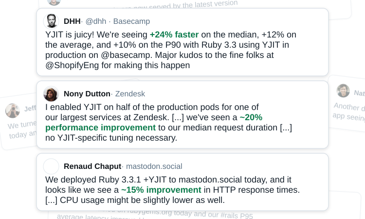

I'm Looking for My Next Role
Hello there! I'm currently looking for my next role, ideally in compilers, programming languages, systems programming, ML systems, optimization, or research and development. Location-wise, I'm looking for a role in Montreal or a remote position, and I'm not looking to relocate. I thrive at the intersection of research and engineering, and I'm especially interested in work that gives me room to solve problems creatively. My best work happens when I'm trusted with clear goals and given the latitude to figure out how to achieve them.
I assembled and led the team that created YJIT, a JIT compiler that now ships with CRuby and runs in production at Shopify, GitHub, Stripe and many others. My AI research work has received over 2,300 citations. I love tackling interesting problems, whether in areas I know well or ones that are new to me. I've included more about my experience below, but if you'd like to get in touch, you can reach me at max@pointersgonewild.com. There are also additional ways to contact me at the end of this post.
Work Experience in Compilers, Systems and ML/AI
I obtained a PhD in compiler design in 2016, with a specialization in type analysis and JIT compilation. As part of my PhD work, I developed lazy basic block versioning, a new kind of JIT compiler architecture. Much of my work has focused on efficiency and optimization, whether improving peak performance, reducing compilation time, or lowering memory usage.
After my PhD, I joined Apple's GPU compiler team, where I worked on developing and optimizing an LLVM-based compiler for shaders and compute kernels on Apple GPUs. I also evaluated GPU workload performance across multiple generations of hardware. Following this, I joined the Montreal Institute for Learning Algorithms (Mila), an academic AI research institute, where I worked as a research engineer for three years. My work spanned reinforcement learning, deep learning and robotics projects with Yoshua Bengio, Liam Paull, Doina Precup and many graduate students. A large part of my work focused on creating simulated environments for RL and robotics. I also participated in the BabyAI project, which studied language learning in the context of RL before the rise of LLMs. I worked on sim-to-real transfer in robotics before it was cool, and explored data augmentation to enable learning in domains where data is scarce. My work at Mila includes first-author papers at NeurIPS and ICLR.
At Shopify, I assembled and led a team of skilled engineers to build YJIT, a new JIT compiler for CRuby. YJIT was upstreamed into CRuby one year later thanks to its strong performance on real-world software. I collaborated with the open source Ruby maintainers and engineers at GitHub, and became a Ruby core committer. Along the way, I won the Ruby prize in 2021 for the YJIT initiative and was promoted to Senior Staff Engineer. I led this project from inception to deployment at scale across multiple tech companies. YJIT was deployed at Shopify, GitHub, Stripe, Zendesk, Basecamp, hey.com, Mastodon.social, lobste.rs, Discourse and Strava, among others, with reported end-to-end speedups of up to 24%. There's a good chance you've used multiple websites running on YJIT.
{kind=link}

To put YJIT's success in perspective, there had already been at least 16 attempts to compile Ruby code, many of them abandoned, and none had seen widespread adoption among CRuby users. Similarly, there have been on the order of 20 attempts to build Python JIT compilers, many backed by major tech companies, and none of them has yet come close to becoming the mainstream way to run Python. My approach combines domain expertise, pragmatism and leadership that values input from every member of my team.
When tackling compiler and systems problems, I take a data-driven approach. I often start by assembling a large and diverse set of benchmarks, a step that is often overlooked. One of the secrets to YJIT's success is that early on, I pushed to assemble a new benchmark suite based on a representative set of real-world Ruby programs and libraries. This suite eventually became the de facto standard for evaluating Ruby VM performance, both inside and outside Shopify. YJIT could also instrument generated machine code and report a wide range of useful metrics, giving the team detailed insights into its performance both locally and in cloud deployments.
Most recently, I worked at an ML systems startup, where I led a team that built a new compiler for PyTorch and ONNX models from scratch in just a few months. I also assembled a large and diverse suite of ML model benchmarks to guide optimization and evaluate performance. Our work delivered substantial performance improvements, though I can't share specific numbers publicly.
Additional Credentials
People typically think of me as an engineer since I work on deeply technical problems, but on the research side, I have 13 peer-reviewed publications to my name, and my academic work has been cited over 2500 times. For several years, I've served on program committees for compiler-related and VM-related conferences and workshops (MPLR, VMIL, MoreVMs, ICOOOLPS, DLS, Scheme & Functional Programming, SPLASH). I've also been a reviewer for NeurIPS for the last two years. In 2021, I won the most notable paper award at DLS, which recognizes a paper's impact ten years after publication.
I'm an experienced public speaker with 15+ conference talks and one keynote under my belt. I'm also an experienced writer and have published over 175 blog posts since 2011.
I've been doing open source work for close to 20 years, on both large projects and many side projects. These have allowed me to learn and play with concepts from a number of fields, including 3D graphics, sound synthesis and music, machine learning, programming language design, game development, microcontrollers and electronics. Recently, I've been working on Plush, a programming language with a highly optimized interpreter that can even outperform the famously fast Lua interpreter.
Contact Me
You can reach me via email at max@pointersgonewild.com, on LinkedIn, or on X as @Love2Code. Thanks for taking the time to read this post! If you want to help me find my dream job, please share this on LinkedIn, X, or your favorite social hangout!